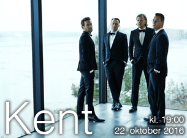

Kent er et svensk Pop/Rock band. Bandet startet opp i 1990 med navnet Jones och Giftet, skiftet navn i 1992 til Havsänglar og til Kent i 1993. I 1995 kom debutalbumet Kent. Bandet har hatt en rekke radiohits, over 3 millioner platesalg og 21 Swedish Grammy Awards. Kent regnes som det mest populære bandet i Sverige og Skandinavia.
Oslo Spektrum
Sonja Henies plass 2
0185 OSLO